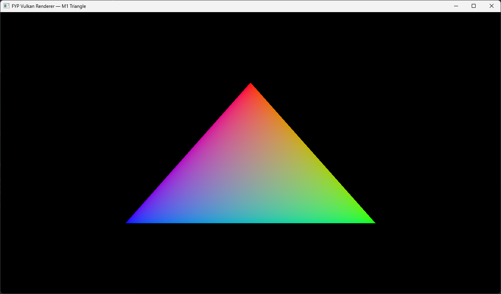
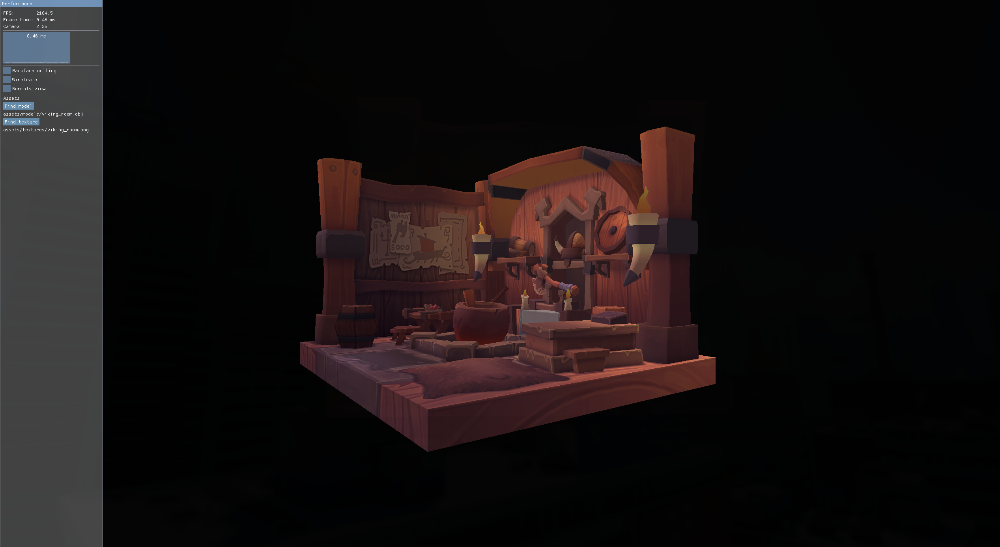

Prototype / Final Year Project
Real-time graphics made visible.
Raiju Renderer is a focused Vulkan renderer designed to show the normally hidden work behind real-time graphics. It turns model data, texture data, synchronisation rules, command buffers, and GPU resources into something that can be inspected, explained, and extended.
Vulkan 1.3
C++20
Dynamic Rendering
Linux + Windows
Open Source
Prototype evidence
Current renderer output
The renderer is being built in milestones. These screenshots show the jump from the first Vulkan baseline to the current textured OBJ vertical slice.

Milestone 1: Vulkan baseline
Window creation, swapchain setup, graphics pipeline, command recording, and presentation.

Milestone 2: Textured model
OBJ loading, texture upload, descriptor binding, depth testing, debug UI, and visible model output.
Getting started
Build and run
Requirements: Vulkan 1.3 capable GPU, C++20 compiler, CMake 3.25+, Vulkan SDK, and vcpkg.
git clone https://github.com/Raiju-Deeq/FYP-Vulkan-Renderer.git
cd FYP-Vulkan-Renderer
cmake --preset linux-debug
cmake --build --preset linux-debug
./build/linux-debug/vulkan-renderer